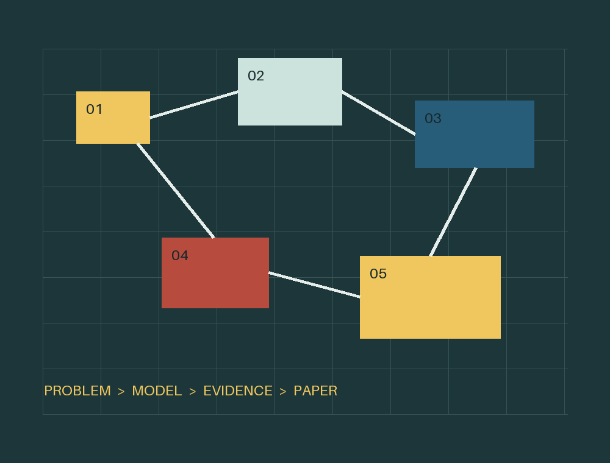

背景 → 目标 → 输入 → 输出 → 约束
WRITER-FIRST CURRICULUM
今日训练
0%
你不需要先学完所有数学
先学会把队友的模型
写成评委愿意读的论文
从审题、证据链和结果表达入手，再按题型补齐方法。每天 60–90 分钟，14 天完成第一轮。

为什么选、怎样建、如何求、怎样验
表格、图形、误差、敏感性、结论
边算边写，接口清楚，拒绝最后通宵拼接
TODAY · 75 MIN
第一次训练：拆一篇国一论文
写手底线没有数字的结论通常不是结果没有验证的模型通常不是闭环没有输入输出的分问通常没有被理解
14-DAY SPRINT
两周学习路线
按写作价值排序，而非课件顺序。前 7 天建立论文框架，后 7 天学会读懂并追问队友的模型。
PERSONAL LEARNING DATABASE
你的学习档案
这里保存每天的理解、问题、错误和复习记录。它衡量的不是“看过多少页”，而是你能否解释、应用和写出来。
REVIEW QUEUE
需要再次想起来的内容
LEARNING LOG
学习记录
METHOD TRANSLATOR
方法不是名字，是一组承诺
向建模手追问
听到一个模型名，先问这 6 件事
- 它解决哪一问，输出是什么？
- 为什么适合这些数据和约束？
- 变量、参数和单位是什么？
- 关键假设是否符合背景？
- 用什么基线或指标验证？
- 失败情形和适用边界是什么？
DEEP-DIVE TEXTBOOK
从“会叫名字”到理解模型为何成立
每章围绕数学对象、假设、推导、诊断、失效边界和论文表达展开。建议先学与候选赛题对应的章节。
PAPER DOCTOR
论文体检清单
比赛第二天晚上开始反复检查。勾选结果保存在本机。
0 / 18已通过
摘要五句法
评委先在这里决定是否继续认真读
一句话说明对象、矛盾和整篇目标。
交代各问怎样递进，而非复制题目。
说方法，更要说关键改造与原因。
至少给出关键数值、误差或方案。
说明可靠性及现实意义，不喊口号。
CURATED FROM YOUR FILES
资料不求全读，只求在正确时点读
FULL-TEXT · 约 2400 页
搜索老师课件原文
输入概念后返回文件名、页码和原文片段。例：主成分、异方差、摘要、灵敏度、Monte Carlo。
正在载入逐页知识库…
阅读顺序P0：写手必须P1：按题型补充P2：遇到对应赛题再查